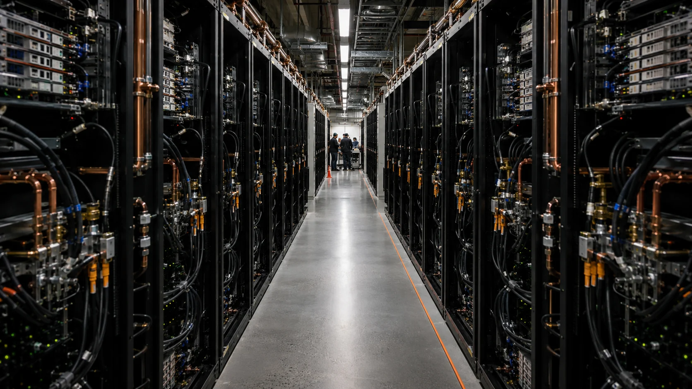
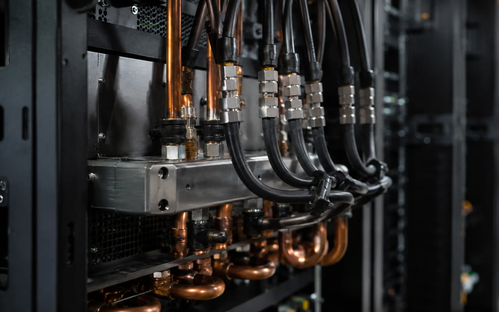
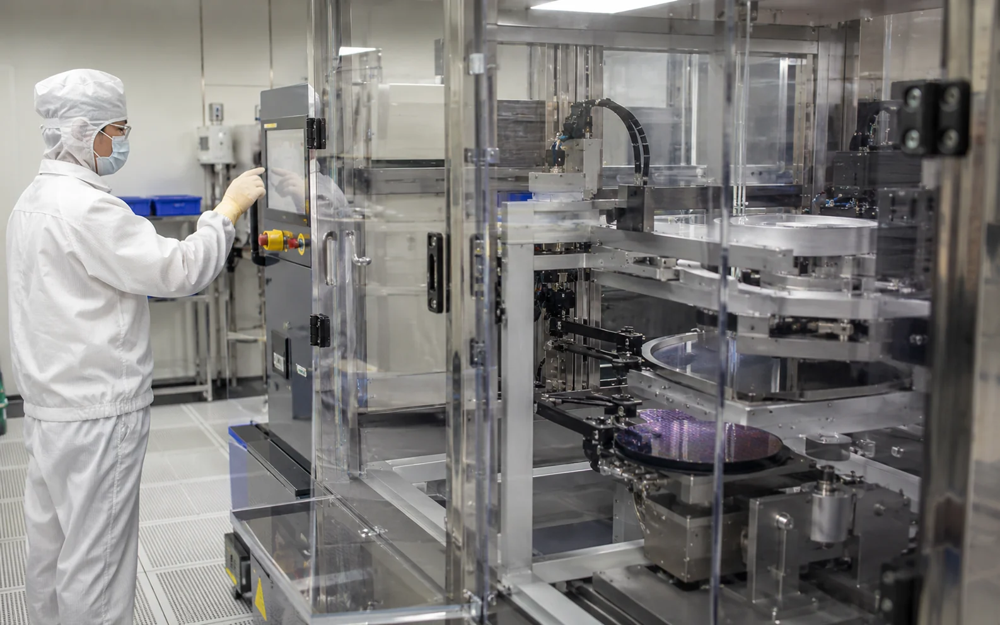

Nvidia in 90 Sekunden
Nvidia entwickelt Rechenplattformen für beschleunigtes Computing. Zum System gehören GPUs, CPUs, Hochgeschwindigkeitsverbindungen, Netzwerkprodukte und Software. Der wirtschaftliche Kern liegt inzwischen in Rechenzentren. Hyperscaler, Cloudanbieter, Forschungseinrichtungen und große Unternehmen kaufen komplette Plattformen, um KI-Modelle zu trainieren und Anwendungen in großem Maßstab auszuführen.
Der Wettbewerbsvorteil entsteht aus dem Zusammenspiel von Hardware und Software. CUDA bindet Entwickler an das Ökosystem, während Rack-Systeme und Netzwerkkomponenten die Integration vereinfachen. Für Kunden zählt dadurch weniger der Preis eines einzelnen Chips als die Leistung des gesamten Systems: Wie viele Modelle lassen sich trainieren, wie schnell entstehen Antworten und wie hoch fallen Stromverbrauch und Betriebskosten pro Recheneinheit aus?
Diese Systemlogik erklärt, weshalb Nvidia an immer größeren Teilen des Investitionsbudgets beteiligt ist. Mit jedem Ausbau einer AI Factory wächst der Bedarf an Beschleunigern, Verbindungen, Switches und Software. Die hohe Konzentration auf wenige große Käufer bleibt dennoch ein zentraler Punkt. Verschieben Hyperscaler ihre Budgets oder verlängern sie Nutzungszyklen, erreicht dieser Effekt Nvidia schnell.
Die Zahl hinter dem neuen Zyklus
Der Quartalsumsatz von 96,221 Milliarden Dollar lag 106 Prozent über dem Vorjahreswert und 18 Prozent über dem vorherigen Quartal. Noch deutlicher ist die Entwicklung im Data Center: 89 Milliarden Dollar entsprechen 92,5 Prozent des Konzernumsatzes. Dieses Verhältnis macht Nvidias Stärke und seine Abhängigkeit gleichzeitig sichtbar. Gaming und andere Bereiche bleiben relevant, bestimmen die Investmentstory derzeit aber kaum.
Die Beschleunigung zieht sich durch mehrere Quartale. Der Konzernumsatz stieg von 46,743 Milliarden Dollar in Q2 FY2026 über 57,0 und 68,1 Milliarden auf 81,615 Milliarden Dollar im ersten Quartal FY2027. Mit dem jüngsten Sprung auf 96,221 Milliarden hat sich der Umsatz innerhalb von vier Quartalen mehr als verdoppelt. Das Data-Center-Geschäft bewegte sich nahezu parallel von 41,1 auf 89 Milliarden Dollar.

Für Anleger ist diese Kurve wichtiger als ein einzelner Rekord. Sie zeigt, dass neue Produktgenerationen bislang zusätzliche Nachfrage erschließen, ohne die vorherige Basis sofort zu verdrängen. Gleichzeitig steigt die Vergleichshürde. Je größer der Umsatz wird, desto mehr absolute Nachfrage ist nötig, um hohe prozentuale Wachstumsraten zu halten.
Die Marge macht den Unterschied
Nvidias Wachstum wäre weit weniger wertvoll, wenn es nur über Preise oder aggressive Vorfinanzierung erkauft würde. Die GAAP-Bruttomarge von 75 Prozent zeigt, dass die Knappheit und der Systemvorteil weiterhin erhebliche Preissetzungsmacht ermöglichen. Das operative Ergebnis erreichte 63,734 Milliarden Dollar, der Nettogewinn 59,688 Milliarden. Ein großer Teil des zusätzlichen Umsatzes kommt damit im Ergebnis an.
Diese Profitabilität finanziert Forschung, Lieferkettenzusagen und die nächste Plattformgeneration aus eigener Kraft. Sie schafft außerdem Puffer für Phasen, in denen Produktwechsel, Exportbeschränkungen oder Kundenausgaben die Marge belasten. Genau deshalb beobachten professionelle Anleger nicht allein den Umsatz. Die entscheidende Kombination lautet Wachstum plus Bruttomarge. Beginnt eine dieser Größen zu fallen, verändert sich der Bewertungsrahmen schnell.

Das China-Risiko bleibt konkret. In seiner Prognose für das dritte Quartal unterstellt Nvidia keinen Umsatz mit Data-Center-Compute-Produkten in China. Die Guidance enthält damit bereits eine sichtbare Einschränkung. Weitere Exportregeln oder Umgehungsprobleme könnten dennoch Lieferketten und Produktmix beeinflussen.
108 Milliarden Dollar sind die nächste Messlatte
Für das dritte Quartal stellt Nvidia 108 Milliarden Dollar Umsatz in Aussicht, mit einer Bandbreite von plus oder minus zwei Prozent. Die Mitte der Prognose entspräche gegenüber Q2 einem weiteren sequenziellen Wachstum von rund zwölf Prozent. Nach dem außergewöhnlichen Sprung des vergangenen Quartals wäre das ein weiteres Signal, dass die Nachfrage noch nicht in eine normale Ausbauphase zurückkehrt.
Der Guide ist zugleich eine Erwartungsmaschine. Der Aktienmarkt bewertet selten die veröffentlichte Zahl allein. Entscheidend ist, ob Auftragseingang, Lieferfähigkeit und Produktmix einen erneuten Sprung im folgenden Quartal zulassen. Je häufiger Nvidia die eigene Prognose deutlich übertrifft, desto höher wird die unsichtbare Messlatte. Eine formal erreichte Guidance kann dann bereits als Enttäuschung gelten.
Die operative Geschichte bleibt deshalb stark, während das Reaktionsrisiko wächst. Anleger sollten besonders auf die Data-Center-Marge, den Übergang zu Vera Rubin, verfügbare Strom- und Rechenzentrumsleistung bei Kunden sowie Hinweise auf die Lebensdauer bestehender Systeme achten.

Was der Markt bereits bezahlt
Beim vorläufigen Kurs von 217,78 Dollar liegt die Marktkapitalisierung bei rund 5,29 Billionen Dollar. Das ausgewiesene KGV auf Basis der letzten zwölf Monate beträgt etwa 27,3; das Kurs-Umsatz-Verhältnis liegt je nach Datenanbieter ungefähr bei 18. Diese Multiples wirken für ein Unternehmen mit dreistelligem Umsatzwachstum nicht automatisch extrem. Sie setzen jedoch voraus, dass ein erheblicher Teil der aktuellen Profitabilität erhalten bleibt.
Ein einfaches KGV-Modell verdeutlicht die Spannweite. Im Bear-Szenario führen 8,50 Dollar Gewinn je Aktie und ein Multiple von 22 zu einem Rechenwert von 187 Dollar. Das Base-Szenario kombiniert 10,50 Dollar EPS mit einem KGV von 28 und ergibt 294 Dollar. Im Bull-Szenario stehen 12 Dollar EPS und ein Multiple von 34 für 408 Dollar. Die Bandbreite ist groß, weil schon kleine Änderungen bei Gewinn und Bewertungsaufschlag starke Kurswirkungen entfalten.
Diese Werte sind Szenarien und keine Kursversprechen. Sie zeigen, welche Kombinationen erforderlich wären. Der Bear Case braucht keinen Zusammenbruch des Geschäfts. Bereits eine Normalisierung der Marge oder ein geringerer Bewertungsaufschlag reicht aus. Der Bull Case verlangt dagegen anhaltendes Wachstum, hohe Kapitalrenditen und Vertrauen in mehrere weitere Produktzyklen.
Der Engpass wandert
Nvidias größte Chance liegt in der Verbreiterung des KI-Einsatzes. Training bleibt wichtig, doch Inferenz und agentische Anwendungen können dauerhaft sehr viel Rechenleistung benötigen. Mit jeder Anwendung, die aus dem Experiment in den Alltag wechselt, wächst der wiederkehrende Bedarf an Rechenkapazität. Nvidia profitiert außerdem davon, dass die eigene Plattform Netzwerk und Software einschließt.
Der Kapitalzyklus wird dadurch breiter und langfristiger. Hyperscaler bestellen nicht nur neue Systeme, sie finanzieren Gebäude, Umspannwerke, Kühlung und Glasfaser. Diese Investitionen erhöhen die Bindung an einmal gewählte Architekturen, weil ein Plattformwechsel im laufenden Betrieb teuer und technisch riskant ist. Für Nvidia kann daraus eine längere Umsatzbasis entstehen. Gleichzeitig wächst die Abhängigkeit von der Rendite der Kunden. Wenn neue AI-Dienste weniger Erlös erzeugen als erwartet, werden selbst finanzstarke Betreiber ihre Ausbaupläne priorisieren. Die entscheidende Nachfragefrage lautet deshalb zunehmend, wie viel wirtschaftlicher Nutzen pro zusätzlichem Rechenzentrum entsteht. Dieser Nutzennachweis wird für die nächste Bewertungsphase wichtiger als reine Modellgröße.
Das größte Risiko könnte außerhalb des Konzerns entstehen. AI Factories benötigen Strom, Genehmigungen, Kühlung und Netzanschlüsse. Wenn Projekte trotz vorhandener Chips nicht rechtzeitig ans Netz gehen, verschiebt sich Nachfrage. Gleichzeitig arbeiten Kunden und Wettbewerber an eigenen Beschleunigern. Diese Lösungen müssen Nvidia nicht vollständig ersetzen, um das Preisniveau oder den Anteil an neuen Budgets zu beeinflussen.
Die Titelstory bleibt deshalb eine Qualitätsgeschichte mit steigender Erwartungshöhe. Die wichtigste Kennzahl für die kommenden Quartale ist die Kombination aus Data-Center-Wachstum und Bruttomarge. Solange beide Größen hoch bleiben, besitzt Nvidia den stärksten operativen Beweis im KI-Infrastrukturzyklus. Sobald eine davon deutlich nachgibt, wird aus dem Systemvorteil eine Bewertungsfrage.